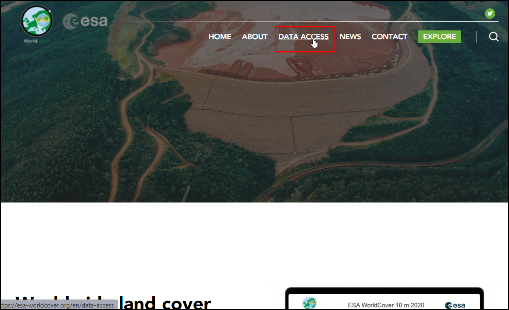
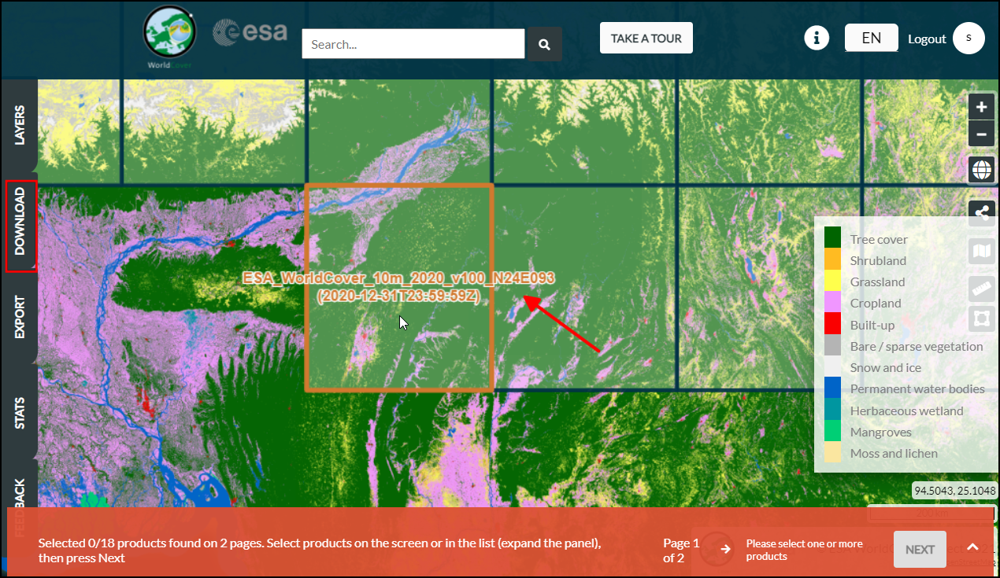
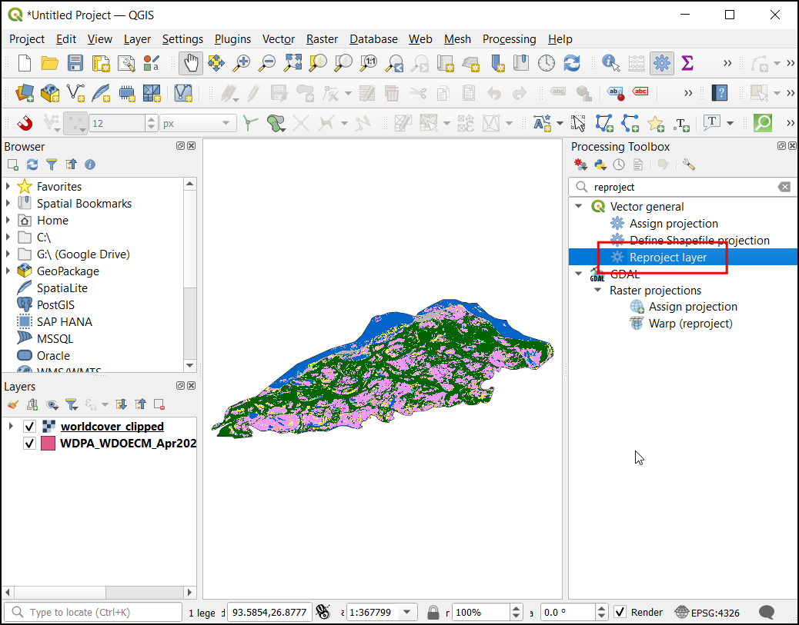
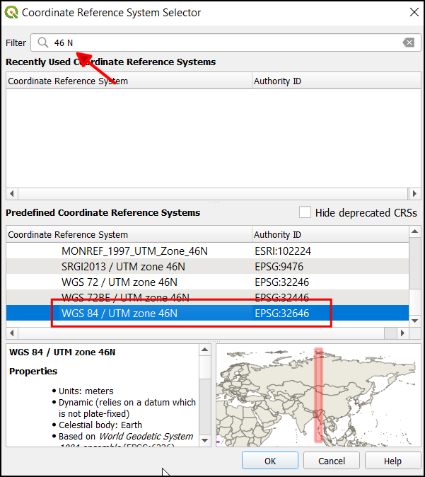
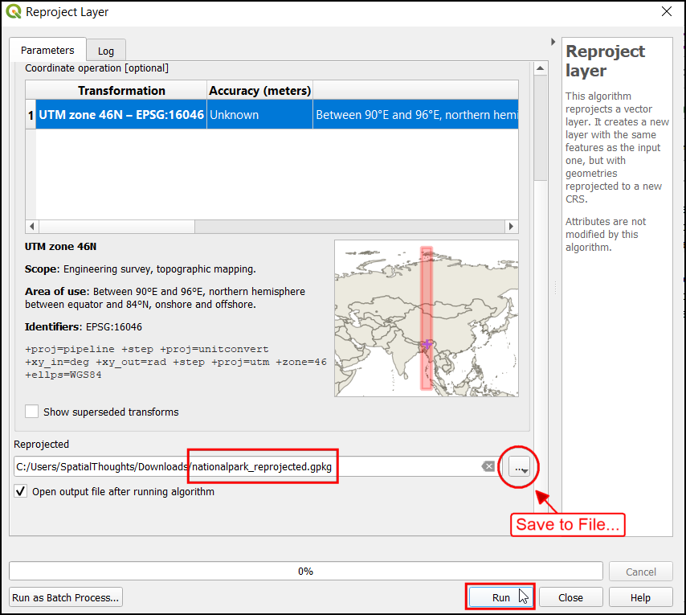
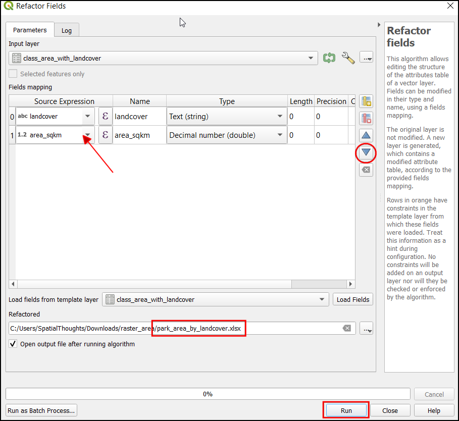

Ujaval Gandhi
Ujaval GandhiIzračun površine rastra (QGIS3)¶
Številne aplikacije zahtevajo kvantifikacijo vzorca rabe tal v regiji. Zbirke podatkov o rabi tal in pokrovnosti (LULC) so na voljo v obliki rastrskih datotek, v katerih je vsakemu pikslu dodeljena vrednost razreda. Analitiki GIS morajo na podlagi teh podatkov pogosto pripraviti poročila, tako da izračunajo površino razreda v določeni regiji. QGIS je opremljen s številnimi vgrajenimi orodji za izračunavanje in povzemanje rastrskih površin.
Opomba
V preteklosti je bil predlagani pristop za izračun površin rastra pretvorba rastrskega sloja v vektorski in uporaba tehnik izračuna vektorskega območja. Ta pristop je računsko zahteven in nagnjen k napakam. Priporočeni pristop je uporaba orodja za obdelavo Raster layer unique values report, ki lahko neposredno izračuna površine pikslov. Če imate sloj z veliko poligoni in potrebujete površine za vsakega od njih, lahko uporabite orodje Zonal histogram, kjer dobite število pikslov posameznega razreda in ga nato pomnožite s površino vsakega piksla.
Pregled naloge¶
Uporabili bomo rastrski sloj z 11 razredi pokrovnosti tal in izračunali površino vsakega razreda v nacionalnem parku. Rezultate bomo tudi naknadno obdelali in ustvarili preglednico z imeni razredov in površinami.
Česa se bomo še naučili¶
Kako uporabiti simbologijo v sloju iz slogovne datoteke v formatu .qml.
Kako zapisati izraze z več pogoji if/else z uporabo stavka CASE.
Kako izvoziti tabelo QGIS kot Excelovo preglednico.
Pridobivanje podatkov¶
Prenesli bomo naslednje nabore podatkov
Svetovna zbirka podatkov o zavarovanih območjih (WDPA): V Indiji bomo prenesli shapefile meje nacionalnega parka Kaziranga National Park.
ESA WorldCover 2020: WorldCover 10 m 2020 Evropske vesoljske agencije (ESA) zagotavlja globalni zemljevid pokritosti tal za leto 2020 z ločljivostjo 10 m. Prenesli bomo del, ki pokriva naše interesno območje.
Meja parka¶
Pojdite na spletno mesto Protected Planet in kliknite na iskalnik. Poiščite
Kaziranga National Park.

Kot rezultat iskanja bo prikazana vektorska meja zaščitenega območja. Kliknite, da si ogledate stran Kaziranga National Park.

Ta stran bo vsebovala dodatne informacije, kot so skupna površina, leto nastanka itd. Kliknite na Download in kliknite SHP za prenos podatkov v obliki Shapefile.
Pojavita se dve možnosti za prenos. Kliknite continue pod Non Commercial Use. Zdaj se bo prenesla datoteka zip, ki vsebuje mejo nacionalnega parka.

Podatki o pokrovnosti tal¶
Pojdite na spletno stran ESA WorldCover in kliknite na meni DATA ACCESS.

Pomaknite se navzdol do razdelka DATA DOWNLOAD in kliknite na povezavo, da odprete pregledovalnik WorldCover

Za prenos podatkov morate ustvariti brezplačen račun. Kliknite na povezavo Register v zgornjem desnem kotu. Pri ustvarjanju novega računa sledite navodilom.

Ko ustvarite račun, se prijavite s poverilnicami. V tej vadnici nas zanima nacionalni park Kaziranga. Povečajte na območje severovzhodne Indije. Ko boste dovolj povečali, se bo začelo prikazovati omejitveno območje dela pokrovnosti tal.

Poiščite in poiščite območje ploščic
N24E093.

Izberite ploščico in kliknite NEXT.

Click on the DOWNLOAD to download a zip file containing the landcover information in raster format. Make sure to select WorldCover Version 1 data for download.

We will also download a symbology file provided by ESA. Visit the ESA WorldCover Data Access page., Scroll-down to the Symbology section. Click on the QGIS to download the ESAWorldCover_ColorLegend.qml file which can be used to style the raster layer with approproate colors and class labels.

Kopijo podatkovnih nizov lahko neposredno prenesete s spodnjih povezav:
Meja narodnega parka Kaziranga WDPA_WDOECM_Apr2022_Public_10744_shp_0.zip
ESA WorldCover Tile N24E093 podmnožica terrascope_download_20220422_114733.zip
ESA WorldCover QML Style datoteka ESAWorldCover_ColorLegend.qml
Vir podatkov [WDPA] [WorldCover]
Postopek¶
Razpakirajte vse prenesene datoteke. V Browser-ju poiščite mapo z datoteko meje
WDPA_WDOECM_Apr2022_Publicc_10744_shp-polygons.shpin jo povlecite ter spustite na delovno površino QGIS.

Zdaj poiščite rastrski sloj Worldcover
ESA_WorldCover_10m_2020_v100_N24_E093_Map.tifin ga spustite na delovno površino QGIS.

Na plošči Layers bosta zdaj naložena vektorski sloj meje in rastrski sloj pokrovnosti tal. Pripnimo raster pokrovnosti tal na mejo nacionalnega parka. Pojdite na , da odprete orodjarno Processing. Poiščite in najdite algoritem . Z dvoklikom ga zaženite.

V pogovornem oknu Clip Raster by Mask Layer` izberite sloj
ESA_WorldCover_10m_2020_v100_N24_E093_Mapkot Input layer in slojWDPA_WDOECM_Apr2022_Publicc_10744_shp-polygonskot Mask Layer. Vnesite-9999v razdelek Assign a specified nodata value to output bands.

Zdaj odprite razdelek Advanced Parameters in v razdelku Profile izberite
High Compression. V razdelku Clipped (mask) kliknite na...in izberite Save To File…. Vnesite ime datoteke kotworldcover_clipped.tif. Kliknite Run.

Zdaj bo sloj
worldcover_clippednaložen na delovno površino QGIS. Z desno tipko miške kliknite na slojESA_WorldCover_10m_2020_v100_N24_E093_Mapin izberite Remove Layer…

Oba sloja sta v geografskem sistemu CRS
EPSG:4326. Ta CRS ima enote stopinje in ni primeren za izračun območja. Sloja moramo najprej transformirati v predvideni CRS. Za regionalne analize, kot je ta, je UTM dobra izbira kot projektni CRS. Sloje bomo preslikali v CRS za lokalno območje UTM. Odprite orodjarno Processing in poiščite algoritem . Z dvojnim klikom ga zaženite.

V pogovornem oknu Reproject Layer izberite sloj
WDPA_WDOECM_Apr2022_Publicc_10744_shp-polygonskot Input layer, kliknite Select CRS kot Target CRS.

Naše interesno območje spada v območje UTM 46N. Poiščite 46 N in izberite CRS
WGS 84 / UTM zone 46N.

Opomba
Če želite ugotoviti, katero območje UTM je v vaši regiji, si oglejte spletno mesto What UTM Zone am I in.
V razdelku Reprojected kliknite
...in izberite Save To File…`. Vnesite imenationalpark_reprojected.gpkg. Kliknite Run.

Zdaj bo sloj
nationalpark_reprojectednaložen na delovno površino. Z desno tipko miške kliknite slojWDPA_WDOECM_Apr2022_Publicc_10744_shp-polygonsin izberite Remove Layer…, da ga odstranite. Zdaj bomo ponovno transformirali rastrsko plast. V orodjarni Processing Toolbox poiščite

V pogovornem oknu Warp (Reproject) izberite
worldcover_clippedkot Input layer`, kot Target CRS` izberiteWGS 84 / UTM zone 46NCRS. Odprite Advanced Parameters in v Profile izberiteHigh Compression.

Zdaj v razdelku Reprojected kliknite na
...in izberite Save To File…`. Vnesite imeworldcover_reprojected.tif. Kliknite Run.

Zdaj bo na delovno površino naložen sloj
worldcover_reprojected, odstranite slojworldcover_clipped. Nastavimo sloj projekta na območje UTM. Kliknite na kateri koli sloj in izberite .

Zdaj bo projektni CRS posodobljen. Nastavimo simboliko rastrskega sloja v skladu z imeni razredov in barvami podatkovnega niza ESA WorldCover. Z desno tipko miške kliknite na sloj
worldcover_reprojectedin kliknite Properties…

V pogovornem oknu Layer Properties izberite Symbology. Opazite lahko, da so barve sloja prikazane v belo-črnem tonu. Če želite to popraviti, kliknite na . Poiščite in izberite datoteko
ESAWorldCover_ColorLegend.qml.

Zdaj si lahko ogledate posodobljene barve simbolov in opise razredov. Kliknite OK.

Razširite sloj
worldcover_reprojectedna plošči Layers, da si ogledate legendo s pravilnimi opisi razredov.

Zdaj izračunajmo površino za vsak razred. V orodjarni za obdelavo poiščite orodje Raster layer unique values report. Dvakrat kliknite nanj, da ga odprete.

V pogovornem oknu Raster Layer Unique Values Report izberite Input layer kot
worldcover_reprojected. Pod tabelo Unique values table kliknite na...in izberite Save to File…. Vnesite imeclass_areas.gpkg. Kliknite Run.
Zdaj bo sloj
class_areasdodan na delovno površino Layers. Z desno tipko miške kliknite na sloj in kliknite Open Attribute Table. Stolpecm2vsebuje površino za vsak razred v kvadratnih metrih.

Pretvorimo površino v kvadratne kilometre. V Processing Toolbox poiščite in izberite .

V pogovornem oknu Kalkulator polj izberite sloj
class_areasv polju Input Layer. Vnesite Field name kotarea_sqkm. V polju Result field type izberiteFloat. V okno Expression vnesite spodnji izraz. Ta bo pretvoril m2 v km2 in zaokrožil rezultat na 2 decimalni mesti. Pod oknom Calculated kliknite na...in izberite Save To File…. Vnesite imeclass_area_sqkm.gpkg. Kliknite Run.
round("m2"/ 1e6, 2)
Zdaj bo plast
class_area_sqkmnaložena na delovno površino. Odprite atributno tabelo in preverite novo dodani stolpec area_sqkm. Opazili boste, da stolpec Value vsebuje številke za vsak razred. Za lažjo razlago rezultatov dodajmo tudi opis za vsako številko razreda. Opisi razredov so na voljo v ESA Product User Manual.

Odprite aplikacijo Field Calculator in izberite sloj
class_areas_sqkmv polju Input Layer. Vnesite Field name kotlandcover, v Result field type` izberiteString. V okno Expression vnesite spodnji izraz. Ta izraz uporablja izjavo CASE za dodelitev vrednosti na podlagi več pogojev. Pod oknom Calculated kliknite na...in izberite Save To File… . Vnesite imeclass_area_with_landcover.gpkg. Kliknite Run.
CASE WHEN "value" = 10 THEN 'Tree cover' WHEN "value" = 20 THEN 'Shrubland' WHEN "value" = 30 THEN 'Grassland' WHEN "value" = 40 THEN 'Cropland' WHEN "value" = 50 THEN 'Built-up' WHEN "value" = 60 THEN 'Bare / sparse vegetation' WHEN "value" = 70 THEN 'Snow and Ice' WHEN "value" = 80 THEN 'Permanent water bodies' WHEN "value" = 90 THEN 'Herbaceous wetland' WHEN "value" = 95 THEN 'Moss and lichen' WHEN "value" = 100 THEN 'Mangroves' END
Zdaj bo sloj
class_area_with_landcovernaložen na delovno površino. Odprite atributno tabelo. Stolpec landcover bo vseboval ime pokrovnosti ob vsaki vrednosti.

Izvozimo ta rezultat kot datoteko Excel. Pred izvozom bomo tabelo tudi uredili in odstranili neželena polja. V orodjarni Processing Toolbox poiščite in izberite .

V pogovornem oknu Refactor Fields izberite sloj
class_area_with_landcoverv polju Input Layer. Izberite vse stolpce razen area_sqkm in landcover, nato kliknite Delete selected field.

Vrstni red polj v tabeli lahko spremenite tudi z gumbom Move Selected Fields. Ko končate z urejanjem, kliknite na gumb
...poleg Refactored in izberite Save To File…. Kot obliko izberiteXLSX datoteke (*.xlsx). Vnesite ime datoteke kotpark_area_by_landcover.xlsxin kliknite Save. V pogovornem oknu Refactor Fields kliknite Run, da uporabite svoje spremembe.

Rezultat bo preglednica s stolpcema landcover in area_sqkm.

If you want to give feedback or share your experience with this tutorial, please comment below. (requires GitHub account)